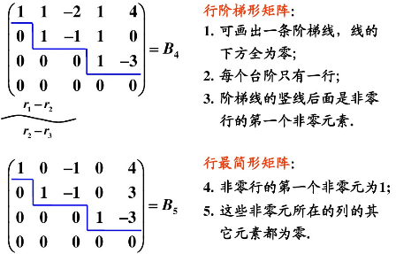
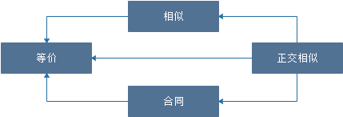

线性代数公式大全（二）
线性方程组
章节概括
- 具体型线性方程组
- 齐次线性方程组
- 有解的条件
- 解的性质
- 基础解系和解的结构
- 求解方法与步骤
- 非齐次
- 有解的条件
- 解的性质
- 求解的方法与步骤
- 齐次线性方程组
- 抽象性线性方程组
- 有解的条件与解的判定
- 解的结构
- 基础解系的讨论
- 系数矩阵列向量与解的关系
- 两个方程组的公共解
- 同解方程组
方程组的基本形式
矩阵形式
向量形式
系数矩阵与增广系数矩阵
系数矩阵
增广系数矩阵
A,B合并矩阵
行阶梯形矩阵

解向量
解向量是线性方程组的一个解。因为一组解在空间几何里可以表示为一个向量，所以叫做解向量。
基础解系
基础解系是指方程组的解集的极大线性无关组，即若干个无关的解构成的能够表示任意解的组合
基础解系需要满足三个条件：
- 基础解系中所有量均是方程组的解；
- 基础解系线性无关，即基础解系中任何一个量都不能被其余量表示；
- 方程组的任意解均可由基础解系线性表出，即方程组的所有解都可以用基础解系的量来表示。
一般设自由变量为1，然后求基础解系的其他数，画行阶梯形，不是直角的一方为自由变量。若只有一个自由变量，则设自由变量为1；若有2个自由变量，则设自由变量为1,0和0,1；若有3个自由变量，则设自由变量为1,0,0和0,0,1。
解的结构
可表示为$Ax = B$的通解形式
求基础解系例子
由上可得$x_1 = -x_4,x_2 = x_4$，则得以下通解：
则方程组的基础解系为：
线性方程组解的结论
结论1
结论2
求通解例子
特征值与特征向量
章节概括
- 特征值与特征向量
- 定义
- 性质
- 求法
- 具体型矩阵
- 抽象型矩阵
- 相似
- 矩阵相似
- 定义
- 性质
- 矩阵的相似对角化
- 定义
- 可相似对角化的条件
- 两个充分
- 两个必要
- 相似对角化的步骤
- 应用
- 实对称矩阵的相似对角化
- 反问题
- 反求参数
- 反求A
- 求$A^k$与$f(A)$
- 矩阵相似
特征值、特征向量
设A为n阶矩阵，若存在一个数$\lambda$和非零向量$X$，使得$AX = \lambda X$，称$\lambda$为矩阵A的特征值，称$X$为矩阵A的属于特征值$\lambda$的特征向量
特征多项式、特征方程
求特征值的方法
求特征向量的方法
性质
矩阵相似
概念
设A、B为两个n阶矩阵，若存在可逆矩阵P，使得$P^{-1}AP = B$，则称A与B相似，记作$A\sim B$
性质
矩阵A和矩阵B相似，$A\sim B$
- A、B的特征值相等
- 若A、B皆为可逆矩阵，则$A^{-1}\sim B^{-1}$
- A、B的行列式相等，$|A| = |B|$
- A、B的迹（正对角线相加）相等，$tr(A) = tr(B)$
- $A^m \sim B^m$
相似对角化
若一个矩阵与对角矩阵相似，则称矩阵可以对角化
存在可逆矩阵P，使得$P^{-1}AP = \Lambda $，其中$\Lambda$为对角矩阵，$A \sim \Lambda$
其中$P = (X_1 , X_2 , X_3)$，$X$为矩阵A的特征向量，$X = (a b c)^T$。其中$X_1 , X_2 , X_3$线性无关，$P$可逆
相似对角化性质
n阶方阵A可以相似对角化
- 充分必要条件：A有n个线性无关的特征向量
- 属于不同特征值的特征向量一定线性无关
- A有n个不相等的特征值→A可以相似对角化
- 若A有重特征值
- 当重特征值（$\lambda _1=\lambda _2 = \cdots = \lambda _n$，n为重特征值的个数）对应的线性无关的特征向量的个数等于特征值的重数时，则A可相似对角化
- $r(\lambda E-A) = n-k$，k为线性无关的特征向量个数。
- 若A为m阶实对称矩阵，则A可对角化
若A不可以相似对角化，则一定有重根
对角矩阵的求法
利用$|\lambda E - A| = 0$求出特征值$\lambda _1,\lambda _2,\cdots,\lambda _n$
矩阵的幂的计算
设有n阶矩阵A，并且A可以对角化，对角化为$\Lambda $
二次型及其标准形
章节概括
- 二次型的定义与矩阵表示
- 化二次型为标准形与规范形
- 配方法
- 正交变换法
- 合同
- 惯性定理
- 正定二次型
- 定义
- 充要条件
- 必要条件
- 判定
- 具体型二次型
- 抽象型二次型
二次型
概念
含n个变量$x_1,x_2,\cdots,x_n$且每项皆为二次的多项式
二次型的矩阵都是对称矩阵，即$A^T = A$
形态
二次型转换成矩阵表达式
- 平方项的系数直接做成主对角元素
- 交叉项的系数除以2，放两个对称的相应位置上
转换示例
$f(x_1,x_2,\cdots,x_n) = 2x_1^2 - 3x_2^2 + x_3^2$的转换
标准二次形
概念
只含有平方项不含交叉项的二次型
系数为1和-1的标准二次型为规范二次型
标准形不唯一，规范形唯一，坐标变换不唯一
形态
惯性定理
二次型的标准型系数中正系数、负系数的个数保持不变，其中正系数的个数称为二次型的正惯性指数，负系数的个数称为二次型的负惯性指数
在二次型中，利用二次型化成对称矩阵，求出该矩阵的特征值，其中正特征值的个数就是正惯性指数，负特征值的个数就是负惯性指数。0不算为任何的惯性指数
标准型相同，正、负惯性指数相同
可逆的线性变换(替换)
若P为可逆的矩阵，称$X=PY$为可逆的线性变换，若P为正交矩阵，称$X=PY$为正交变换，正交变换是一种特殊的可逆线性变换
二次型的标准化
设$f(X) = X^TAX$为一个二次型，若经过可逆的线性变换$X = PY$把二次型$f(X) = X^TAX$化为
二次型的标准化方法
配方法
将$x_1，x_2，x_3，\cdots，x_n$转换为$y_1，y_2，y_3，\cdots，y_n$的式子，若转化后的式子不是标准型，继续化成$z_1，z_2，z_3，\cdots，z_n$的式子
- 先提取和配$x_1$，再提取和配$x_2$，接着提取和配$x_3$，$\cdots$，配完$x_1$后，后面的式子不能出现$x_1$，以下同理。
例子：
- 将二次型$f(x_1,x_2,x_3) = x_1^2 + x_2x_3$转换成标准型
- 将二次型$f(x_1,x_2,x_3) = x_1^2 + 2x_1x_2 + 2x_1x_3 - 4x_3^2$转换成标准型
正交变换法
- 将二次型转换成系数矩阵A
- 求A的特征值$\lambda_1,\lambda_2,\lambda_3,\cdots,\lambda_n$
- 求特征向量$\xi_1,\xi_2,\xi_3,\cdots,\xi_n$
矩阵合同
概念
设A,B为n阶矩阵，若存在可逆矩阵P，使得$P^TAP = B$，称矩阵A与B合同，记$A\simeq B$
二次型合同
设$X^TAX$与$X^TBX$为两个二次型，若矩阵A合同于B，称二次型$X^TAX$与$X^TBX$合同
性质
设A,B为n阶可逆矩阵，$A\simeq B$
- $A\simeq B，B\simeq C，则A\simeq C$
- $r(A) = r(B)$
- $A^T = A \Leftrightarrow B^T = B$
- $A^{-1}\simeq B^{-1}$
- $A^{T}\simeq B^{T}$
正定二次型与正定矩阵
概念
设二次型$f(x_1,x_2,x_3) = X^TAX$，若对于任意的$X \neq 0$，总有$f(x_1,x_2,x_3) = X^TAX > 0$，称$f(x_1,x_2,x_3) = X^TAX$为正定二次型，其中A为正定矩阵
设二次型$f(x_1,x_2,x_3) = X^TAX$，若对于任意的$X$，总有$f(x_1,x_2,x_3) = X^TAX \ge 0$，且$f(x_1,x_2,x_3) = X^TAX = 0$当且仅当$X=0$，称$f(x_1,x_2,x_3) = X^TAX$为正定二次型，其中A为正定矩阵
性质
二次型$f(X) = X^TAX$正定的充分必要条件是A的特征值全为正
二次型$f(X) = X^TAX$为正定二次型的充分必要条件如下，即矩阵A的所有顺序主子式都大于0
存在可逆矩阵P，使得$A = P^TP$或$A\simeq E$
二次型$f(X) = X^TAX$的正惯性指数为n（n阶矩阵）
若A是正定矩阵，则A的逆矩阵也是正定矩阵；
两个正定矩阵的和是正定矩阵；
正实数与正定矩阵的乘积是正定矩阵。
A与E合同
正交矩阵
概念
设A为n阶矩阵，$A^TA = AA^T = E$，称A为正交矩阵
性质
设A为正交矩阵
- $A^{-1} = A^T$
- $|A| = \pm1$
- $A的特征值为\pm1$
- 设Q为正交矩阵，且$Y = QX$，则$||X|| = ||Y||$，在二维和三维空间中，正交变换本质上相当于坐标系作一个旋转变换
施密特正交变换
施密特正交化是对一组线性无关的向量进行的正交化变换。任意一组线性无关的向量都可以通过施密特正交化变换为一组单位正交向量。既任意一组基向量可经过施密特正交化化为一组单位正交基。
正交变换过程
矩阵关系总结
等价
适用范围：同型矩阵
相似
适用范围：方阵
正交相似
合同
适用范围：实对称矩阵
关系图像

本博客所有文章除特别声明外，均采用 CC BY-SA 4.0 协议 ，转载请注明出处！